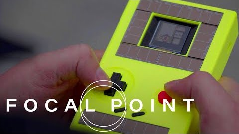

Battery-Free Game Boy
A fully playable handheld console powered only by solar and kinetic (button-mash) energy harvesting. Intermittent-computing checkpointing lets gameplay pause and resume instantly across power failures, with no battery in sight.
Impact: Distinguished Paper Award, IMWUT/UbiComp 2021 (top 3%); Best Presentation Award, UbiComp 2020; Guinness World Record for the first battery-free handheld game console (2022); global press incl. WSJ, BBC, CNET, The Verge, and Seeker.